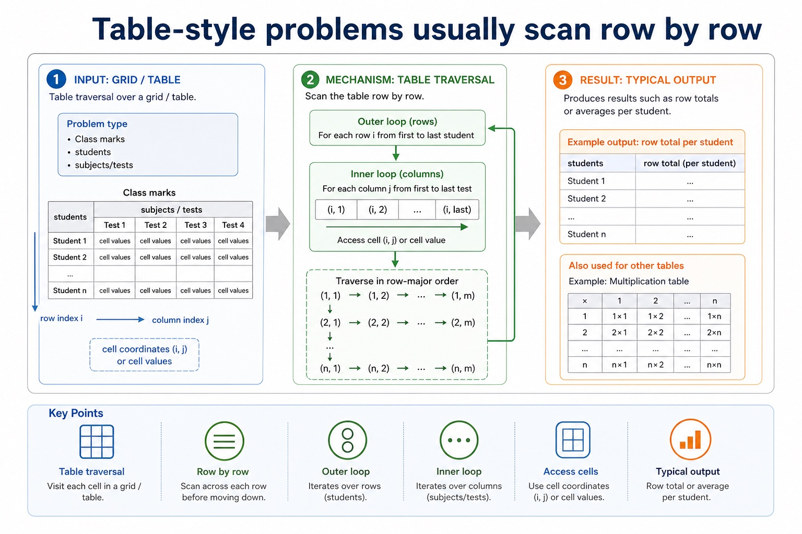
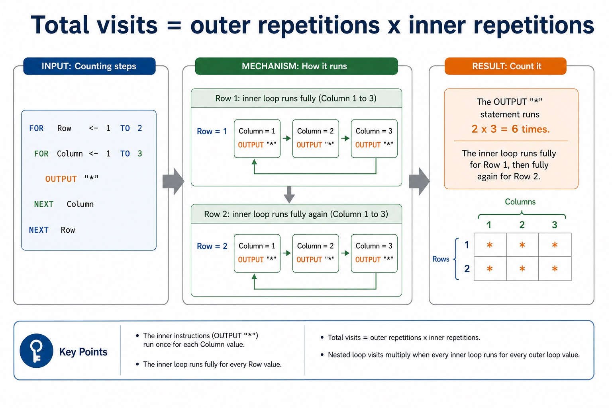
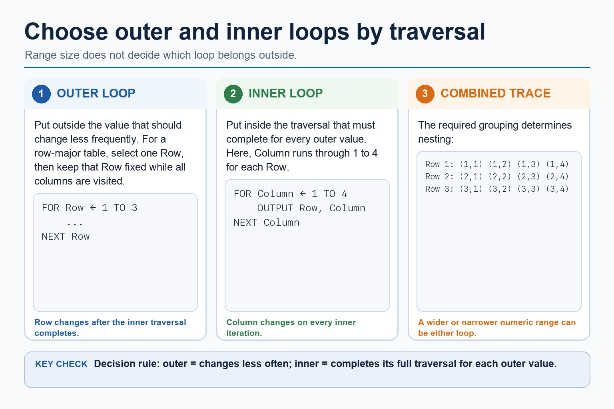
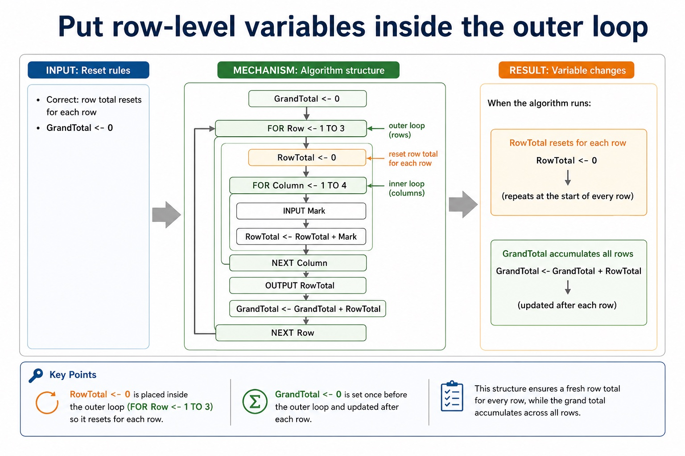

Cambridge AS9618 | Paper 2 | Section 9: Algorithm design and problem-solving
Decomposition and modular problem solving
Flexible-depth lesson
S9.02 | Learn from the diagrams, test the method, then choose the practice you need.
Choose a Quick, Full or Deep route
Quick route
Use the diagnostic, learning objectives, first worked example and foundation question. Stop once the learner can explain the central distinction accurately.
Full route
Use every knowledge-point material set, the worked method, the terminology check and all questions.
Deep route
Add the prerequisite refresher, ask learners to connect the concept checklist, discuss the labelled extension and complete a transfer question without a model answer.
Part 1 | optional depth
Prerequisite knowledge and quick diagnostic
Recall S9.01 before starting this lesson.
Give one accurate definition or method step before continuing. If it is missing, revisit only that prerequisite.
Open optional prerequisite refresher
Abstraction is required both as a concept and as a practical modelling skill: explain its need and benefits, then produce an abstract model containing only details essential to the problem.
Understand abstraction, its purpose/benefits and creation of an abstract model.
Part 2 | knowledge-point material sets
Learn each point through visuals
Follow the map, the three-part explanation and the concrete cue. Open precise wording only after the idea is clear.
Open the concept checklist and choose what to teach
decomposition
problem
modules
procedure
function
01
S9.02 · concept
Decomposition · Problem · Modules · Procedure
Concept map
decompositionproblemmodulesprocedurefunction
See how it works
MeaningDecomposition must break a problem into sub-problems and lead to a program module, identified at design level as a procedure or function with a distinct responsibility
MechanismDecomposition breaks a problem into smaller sub-problems with distinct responsibilities
Consequenceuse decomposition to express the problem as connected modules
S9.02 diagrams
1 / 4
01
Process · 1 of 4
Decomposition: split the problem into sub-problems
Open text transcript
Split the whole task into meaningful sub-problems with distinct responsibilities.
Express the resulting design as program modules with clear inputs, processing and outputs.
A module may become a procedure that performs an action or a function that returns a value.
Confirm that all modules connect into one complete solution.
02
Concrete example · 2 of 4
Stepwise refinement turns a high-level algorithm into implementable modules
Open text transcript
Stepwise refinement starts with a high-level algorithm and repeatedly replaces each complex step with a smaller sequence of defined substeps.
Refinement stops when every step is precise enough to implement and its input and output are clear.
At each level, preserve the parent step's purpose and input-process-output relationship.
Related substeps can be expressed as program modules, including procedures that perform actions and functions that return calculated values.
Every level must reduce ambiguity and collectively remain a complete solution.
03
Comparison · 3 of 4
Section 9 in one page
Open text transcript
Retrieval map
Signal words
Expected mechanism
Typical marking error
IPOC / decomposition
scenario, requirements, constraints
break problem into inputs, processing, outputs and rules
copying the story without design decisions
04
Diagram · 4 of 4
Table-style problems usually scan row by row

Open text transcript
Table traversal
Problem type
Outer loop
Inner loop
Typical output
Grid / table
cell coordinates or cell values
Class marks
Open precise syllabus wording
Use decomposition and express a problem as modules.
Decomposition must break a problem into sub-problems and lead to a program module, identified at design level as a procedure or function with a distinct responsibility.
Supporting diagram library
1 / 15
01
Diagram · 1 of 15
Constraints stop algorithms from wandering off
Open text transcript
A range of 0 to 100 requires both limits to be checked.
Exactly 10 supplied readings means the plan must process all 10 readings.
A capacity of 30 bookings means a request beyond the remaining capacity must be rejected.
Each stated constraint must have a specific consequence in the plan.
02
Diagram · 2 of 15
Use IPOC before choosing a representation
Open text transcript
List each input and record its type or range when the problem supplies them.
Write the required processing in ordered natural-language steps.
State the exact required output.
Record constraints and supported assumptions.
Confirm completeness before choosing a representation.
03
Diagram · 3 of 15
Dry run: execute the algorithm by hand
Open text transcript
1 Copy the variable names into table columns.
2 Write initial values before the loop starts.
3 Use each input value in order.
4 Update variables exactly when pseudocode updates them.
5 Record output only when an OUTPUT statement is executed.
04
Diagram · 4 of 15
Loops make trace tables useful and slightly unforgiving
Open text transcript
Loop tracing
Initialisation Variables such as Total and Count usually need a starting value before the loop.
Update Record new values after assignment, not before.
Condition For WHILE loops, check the condition before each iteration.
Sentinel A sentinel value stops input and should usually not be processed as data.
Output timing If OUTPUT is after the loop, output appears once at the end.
Boundary Check whether loops run 5 times, 6 times, or one time too many.
05
Diagram · 5 of 15
Predict the final output
Open text transcript
Interactive output predictor
Input set
The pseudocode totals three input numbers and outputs Total.
06
Diagram · 6 of 15
Trace Cambridge pseudocode in the exam; Java is only a support view
Open text transcript
Initialise Total to zero before a three-iteration loop.
Input one Number and add it to Total during each iteration.
Output Total once after the loop has processed all three numbers.
A Java support version must preserve the same input, accumulation and final output.
07
Diagram · 7 of 15
A trace table records variables after each change
Open text transcript
Knowledge explanation
What it records
Exam note
Line / step
which statement is being executed
optional, but useful for debugging
Input value
the test data read by INPUT
08
Diagram · 8 of 15
Total visits = outer repetitions x inner repetitions

Open text transcript
Counting steps
FOR Row <- 1 TO 2
FOR Column <- 1 TO 3
OUTPUT ""
NEXT Column
NEXT Row
Count it
The OUTPUT "" statement runs 2 x 3 = 6 times. The inner loop runs fully for Row 1, then fully again for Row 2.
09
Diagram · 9 of 15
Outer loop first, inner loop second

Open text transcript
Choose nested-loop order from the required traversal and grouping, not from which range is wider.
The outer-loop value changes less frequently.
The inner loop completes its full traversal for every outer-loop value.
In row-major traversal, hold one row while visiting every column, then advance the row.
10
Diagram · 10 of 15
Indentation is evidence in nested loops
Open text transcript
Use an outer loop for three rows and an inner loop for four columns.
Calculate Product from the current Row and Column inside the inner loop.
Output Product during every inner-loop iteration.
A corresponding Java support version must also output each product.
11
Diagram · 11 of 15
Put row-level variables inside the outer loop

Open text transcript
Reset rules
Correct: row total resets for each row
GrandTotal <- 0
FOR Row <- 1 TO 3
RowTotal <- 0
FOR Column <- 1 TO 4
INPUT Mark
RowTotal <- RowTotal + Mark
12
Diagram · 12 of 15
Turn vague answers into mark-worthy answers
Open text transcript
Interactive answer fixer
Weak answer
Choose a weak answer to see a stricter version.
13
Diagram · 13 of 15
Match the scenario to the correct algorithm pattern
Open text transcript
Pattern choice
Scenario clue
Core pseudocode feature
One precise explanation
exactly 10 readings
Count-controlled loop
FOR Index <- 1 TO 10
The number of repetitions is known before the loop starts.
14
Diagram · 14 of 15
Paper 2 wants readable Cambridge-style pseudocode
Open text transcript
Initialise Total and Count, then input the first Value.
While Value is not -1, add it to Total and increment Count.
Input the next Value inside the WHILE body before ENDWHILE.
If Count is greater than zero, calculate Average using real division and output it.
Java may support understanding but is not the Cambridge pseudocode answer format.
15
Diagram · 15 of 15
Turn question wording into an algorithm plan
Open text transcript
Scenario triage
Step 1: Output first
Ask: what must be displayed, returned or stored at the end? The final output tells you which variables need to exist.
Output needed: average rainfall
Therefore:
Total is needed
Count is needed
Average <- Total / Count
Apply the idea
Worked method
01Model and decompose a car-park charge
02Keep entry time, exit time and tariff; omit car colour because it cannot change the charge.
03Express the solution as modules InputTimes, CalculateDuration, CalculateCharge and OutputCharge.
04CalculateCharge can become a function returning the charge, while OutputCharge can become a procedure that displays it.
Open precise terminology and exam facts
Decomposition must break a problem into sub-problems and lead to a program module, identified at design level as a procedure or function with a distinct responsibility.
Abstraction removes each irrelevant detail that does not affect the required inputs, rules, constraints or outputs. Producing an abstract model means recording the essential details that remain: the data, relationships and processes needed to solve the problem, not merely listing what was ignored.
Decomposition breaks a problem into smaller sub-problems with distinct responsibilities. Express the resulting design as program modules with clear inputs, processing and outputs; a module may later be implemented as a procedure that performs an action or a function that returns a value.
Abstraction decides what belongs in the model; decomposition decides how the retained problem is divided. The modules must connect into one complete solution and must not omit a requirement.
Stepwise refinement starts with a high-level algorithm and repeatedly replaces each complex step with a smaller sequence of defined substeps. Refinement stops when every step is precise enough to implement and its input and output are clear.
At each level, preserve the parent step's purpose and input-process-output relationship. Related substeps can be expressed as program modules, including procedures that perform actions and functions that return calculated values.
Refinement supports review, implementation and testing because each module has a limited responsibility. It is not merely adding prose: every level must reduce ambiguity and collectively remain a complete solution.
Algorithm design review: define an algorithm as a solution expressed as a sequence of defined steps; use abstraction to retain essential details in an abstract model; use decomposition to express the problem as connected modules; and choose meaningful identifiers recorded in an identifier table.
Solution review: design with input-process-output, use sequence, selection and iteration, document the same algorithm in structured English, a flowchart or pseudocode, and convert between the specified representations without changing its control flow.
Development review: use stepwise refinement until steps are programmable, and construct and interpret logic statements that define decisions, loop conditions or Boolean values. Core answers must not replace these requirements with tracing, Java syntax or vague planning advice.
Beyond syllabus / 延伸知识（不要求背诵）
the same algorithm can be expressed in many programming languages; its logic should remain independent of syntax.
Part 3 | select by learner need
Practice by question type
applyrecallfoundation2 marks
Question 1. What is the difference between abstraction and decomposition?
Show answer and marking guidance
Answer: Abstraction selects essential details for the model; decomposition splits the retained problem into sub-problems/modules.
Marking guidance: Award one mark for each distinct, technically accurate point or method step.
Common error: For the command word apply, perform that exact action; do not replace it with an unrelated fact.
compareevaluateapplication2 marks
Question 2. Compare a procedure module from a function module at this design stage.
Show answer and marking guidance
Answer: A procedure performs an action; a function returns a value to its caller.
Marking guidance: Award one mark for each distinct, technically accurate point or method step.
Common error: Do not repeat the same point in different words; each mark needs a separate idea or method step.
explainexplaintransfer2 marks
Question 3. How does IPO help one refinement level?
Show answer and marking guidance
Answer: It checks that each module receives the data it needs, performs defined processing and supplies the required output.
Marking guidance: Award one mark for each distinct, technically accurate point or method step.
Common error: Do not copy the worked example unchanged; transfer the method and check it against the new context.
Related past-paper indexes
Reference
Marks
Command word
Question type
9618/22/S/25 Q2(i)
2
calculate
calculate
9618/22/S/24 Q7(i)
5
complete
recall
9618/23/W/24 Q7(b)
4
calculate
calculate
9618/22/S/24 Q7(a)
3
describe
explain
Index only: Cambridge question and mark-scheme wording is not reproduced on this public course page.
Part 4 | close when ready
Summary and exam reminders
Summary
Define decomposition and modular problem solving with the exact technical vocabulary expected by the syllabus.
Use the lesson method on a fresh context and show the intermediate decision, representation or calculation.
Match the shape of the answer to the command word and the available marks.
Check the final answer against the scenario instead of repeating a memorised sentence.
Common error to correct
Students often start coding before defining the output. Correction: an algorithm is easier to design when the required result is known first.
Exam technique
Follow the command word: state gives a fact; explain links a cause to a consequence; compare covers both sides.
Match the number of independent points or method steps to the available marks.
For decomposition and modular problem solving, use the exact technical term before applying it to the scenario.